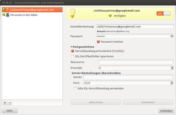
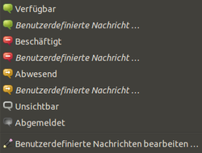

Empathy
Dieser Artikel wurde für die folgenden Ubuntu-Versionen getestet:
Ubuntu 16.04 Xenial Xerus
Ubuntu 14.04 Trusty Tahr
Zum Verständnis dieses Artikels sind folgende Seiten hilfreich:
Empathy  ist ein auf Telepathy und Mission Control basierender Instant Messenger, der eine Vielzahl von Protokollen unterstützt und es ermöglicht, mehrere Instant-Messaging-Dienste wie XMPP (Jabber) oder ICQ gleichzeitig zu verwenden. Eine Besonderheit ist die Möglichkeit einige Protokolle für VoIP/Videochat zu verwenden. Empathy ist seit GNOME-Version 2.24 Teil des GNOME-Projektes. Ausführliche Informationen können auch der offiziellen Dokumentation
ist ein auf Telepathy und Mission Control basierender Instant Messenger, der eine Vielzahl von Protokollen unterstützt und es ermöglicht, mehrere Instant-Messaging-Dienste wie XMPP (Jabber) oder ICQ gleichzeitig zu verwenden. Eine Besonderheit ist die Möglichkeit einige Protokolle für VoIP/Videochat zu verwenden. Empathy ist seit GNOME-Version 2.24 Teil des GNOME-Projektes. Ausführliche Informationen können auch der offiziellen Dokumentation  entnommen werden.
entnommen werden.
Unterstützte Protokolle¶
Empathy befindet sich noch in Entwicklung und unterstützt bislang folgende Instant-Messaging-Dienste:
| Kontaktliste |
AIM (AOL Instant Messenger)
Novell Groupwise
ICQ
MSN
mxit
myspace
Personen in deiner Nähe (People Nearby)
qq
Salut (bei anderen Programmen als "Bonjour" bekannt)
sametime
silc
SIP
Facebook-Chat
Yahoo! und Yahoo! Japan
Zephyr

Dateiversand¶
Dateiversand wird bisher nur für XMPP und People Nearby unterstützt. Möchte man auf den Dateiversand über bestimmte Protokolle nicht verzichten, kann auf Pidgin zurück gegriffen werden.
Audio- und Video-Chat¶
Chatten mit Bild und Ton wird von Empathy derzeit für die Protokolle SIP und XMPP unterstützt. Die MSN-Unterstützung funktioniert derzeit nicht.
Installation¶
Offizielle Paketquelle¶
Empathy ist in einer Ubuntu-Standardinstallation bis Version 15.10 bereits enthalten. Ansonsten kann mit folgendem Paket installiert werden [1]:
empathy
 mit apturl
mit apturl
Paketliste zum Kopieren:
sudo apt-get install empathy
sudo aptitude install empathy
PPA-Quelle¶
Adresszeile zum Hinzufügen des PPAs:
ppa:telepathy/ppa
Hinweis!
Zusätzliche Fremdquellen können das System gefährden.
Ein PPA unterstützt nicht zwangsläufig alle Ubuntu-Versionen. Weitere Informationen sind der  PPA-Beschreibung des Eigentümers/Teams telepathy zu entnehmen.
PPA-Beschreibung des Eigentümers/Teams telepathy zu entnehmen.
Damit Pakete aus dem PPA genutzt werden können, müssen die Paketquellen neu eingelesen werden.
Zur Installation [1] aus dem PPA benötigt man, wie oben, folgendes Paket:
empathy
mit apturl
Paketliste zum Kopieren:
sudo apt-get install empathy
sudo aptitude install empathy
Des Weiteren benötigt [1] man hier die Pakete der Telepathy-Verbindungsmanager für das jeweilige Protokoll. Die folgenden Pakete werden von empathy empfohlen und daher standardmäßig mit installiert. Im Einzelnen sind dies:
telepathy-butterfly (MSN)
telepathy-gabble (XMPP, Facebook-Chat)
telepathy-haze (AIM, ICQ, GroupWise, MSN und Yahoo)
telepathy-idle (account-plugin-irc IRC)
telepathy-salut (Salut)
telepathy-sofiasip (SIP)
mit apturl
Paketliste zum Kopieren:
sudo apt-get install telepathy-butterfly telepathy-gabble telepathy-haze telepathy-idle telepathy-salut telepathy-sofiasip
sudo aptitude install telepathy-butterfly telepathy-gabble telepathy-haze telepathy-idle telepathy-salut telepathy-sofiasip
Ab Ubuntu 12.10 heißen die Paketquellen für die einzelnen Protokolle anders und verbergen sich hinter den Paketen, die mit account-plugin- beginnen:
account-plugin-irc (IRC)
account-plugin-jabber (Jabber)
account-plugin-icq (ICQ)
account-plugin-twitter (Twitter)
account-plugin-sip (SIP)
mit apturl
Paketliste zum Kopieren:
sudo apt-get install account-plugin-irc account-plugin-jabber account-plugin-icq account-plugin-twitter account-plugin-sip
sudo aptitude install account-plugin-irc account-plugin-jabber account-plugin-icq account-plugin-twitter account-plugin-sip
Einrichten¶
Nach Abschluss der Installation kann Empathy über
"Anwendungen -> Internet -> Empathy" (GNOME)
"Applications -> Netzwerk -> Empathy Sofortnachrichtendienst" (Xfce)
gestartet werden. Alternativ steht für den Start [3] auch der Terminal-Befehl empathy zur Verfügung. Sofern man möchte, dass Empathy nach Anmeldung automatisch startet, erstellt man einen Eintrag im Autostart [4].
Konto¶

Mit dem ersten Start von Empathy wird man vom Konto-Manager begrüßt, der es relativ intuitiv und in wenigen Schritten ermöglicht, ein Instant-Messaging-Konto einzurichten oder bestehende (Pidgin-)Konten zu importieren. Alternativ gelangt man über "Bearbeiten -> Konten" oder das Tasten-Kürzel F4 zum Konto-Manager.
Um ein bestehendes Konto einzurichten, geht man im Allgemeinen wie folgt vor:
"Hinzufügen" und Protokoll-Typ auswählen (XMPP, ICQ, ...)
Benutzername und Passwort eingeben
Klick auf "Anmelden"
Optional: Die Konto-Bezeichnung durch Klick auf das bereits markierte Konto ändern
Je nach Protokoll bietet der Konto-Manager noch diverse Einstellungen für Fortgeschrittene an, die bei Bedarf geändert werden können.
Eine Liste von Instant-Messaging-Diensten, bei denen man sich zunächst registrieren muss, findet man hier.
Kontakt hinzufügen¶
Einen neuen Kontakt hinzuzufügen, gestaltet sich wie folgt:
"Chat -> Kontakt hinzufügen"
Konto auswählen, dem der neue Kontakt hinzugefügt werden soll
Kontakt-Details eingeben und Gruppe auswählen oder hinzufügen
Status-Meldungen¶
Der aktuelle Status sowie dessen Einstellungsmöglichkeiten finden sich zum Einen im Panel in Form eines Tray-Symbols als auch in der Kontaktliste, wo auch der Status der Kontakte angezeigt wird.

Multi-User-Chats¶
Einige Instant-Messaging-Protokolle unterstützen sogenannte Multi-User-Chats (MUC) in Chat-Räumen. Hierbei können mehrere Teilnehmer gleichzeitig miteinander kommunizieren. Um einen Chat-Raum zu betreten, muss man in der Kontaktliste unter "Raum -> Beitreten..." die entsprechenden Zugangsdetails des MUCs eintragen.
Einstellungen¶
In den Einstellungs-Manager gelangt man über "Bearbeiten -> Einstellungen" in der Kontaktliste.
Allgemein¶
In der Kategorie "Allgemein" lassen sich verhaltensspezifische Einstellungen konfigurieren.
Benachrichtigen¶
Hier kann eingestellt wie Empathy auf neu eingegangene Nachrichten aufmerksam machen soll.
Rechtschreibprüfung¶
Empathy verfügt bereits über eine Rechtschreibprüfung, die man über den Tab "Rechtschreibprüfung" einstellen kann. Standardmäßig ist hier Englisch und Deutsch aktiviert. Empathy bedient sich hierbei der lokalisierten Wörterbücher der Desktop-Umgebung.
Erscheinungsbilder¶
Empathy kommt mit wenigen Themes für das IM-Fenster daher. Es gibt die Möglichkeit Adium-Themes zu verwenden, wobei noch nicht alle Themes einwandfrei laufen. Eine Liste mit Themes gibt es auf der Empathy-Homepage . Die Themes können wie folgt installiert werden:
Theme runterladen und entpacken[5]
Nach dem entpacken, muss das Theme im Homeverzeichnis unter .local/share/adium/message-styles/ abgespeichert werden wobei der Ordner mit .AdiumMessageStyle enden muss.
Nun kann in den Einstellungen das Theme verändert werden.
Alternativ kann man folgendes Skript abspeichern (z.B. als ~/adiumxtra.sh) und ausführbar machen:
1 2 3 4 5 6 7 8 9 10 11 12 13 14 15 16 17 18 19 20 21 22 23 24 25 26 27 28 29 30 31 32 33 34 35 36 37 38 39 40 41 42 43 44 45 46 | #!/bin/sh # Adium theme AdiumMessageStyle installer for Empathy # Originally © 2009 Antono Vasiljev # Licensed under the same terms as Empathy # http://antono.info/en/165-install-adium-themes-to-empathy # Changed by Vertlo Oraerk (did not work with directories containing spaces in the names) if [ -z $1 ] then echo echo "Usage:" echo "`basename $0` adiumxtra://some.url.here/extra" echo exit 1 else TMPDIR=`mktemp --directory` XTRAURL=`echo $1 | sed -e "s/^adiumxtra:/http:/"` DEST="$HOME/.local/share/adium/message-styles/" if [ ! -d $DEST ] then mkdir -v -p $DEST fi cd $TMPDIR echo "Downloding extra..." wget --no-verbose -O xtra.zip $XTRAURL unzip -qq xtra.zip ls -d ./*.AdiumMessageStyle/ > themes_to_copy.lst num_bytes=`wc -c themes_to_copy.lst | sed 's# themes_to_copy.lst##'` if [ $num_bytes = 0 ] then echo "No themes found in downloaded file" else while read line do echo cp -r \'$line\' "$DEST" | sh done < themes_to_copy.lst echo echo "Theme $XTRAURL was succesfully installed to $DEST" fi rm xtra.zip rm -r $TMPDIR fi exit 0 |
Dieses Skript kann man dann im Browser dann mit dem Protokoll adiumxtra verknüpfen.
Opera¶
In Opera geht man in die "Einstellungen" ( Strg + F12 ) und wählt im Reiter "Erweitert" den Unterpunkt "Programme". Dort klickt man "Hinzufügen" an, gibt als Protokoll 'adiumxtra' an und wählt als anderes Programm das Skript aus.
Will man die Zuordnung gleich für alle Benutzer vornehmen, muss man die Datei /etc/opera6rc mit einem Editor mit Root-Rechten [3] öffnen und folgende Zeilen hinzufügen:
[Trusted Protocols] adiumxtra=0,0,~/adiumxtra.sh
Das Skript sollte dann aber mit Rootrechten an einen Ort kopiert werden, wo es von allen Benutzern erreichbar ist.
Konqueror¶
Um das Skript in Kombination mit dem Konqueror zu nutzen, muss man /usr/share/kde4/services/adiumxtra.protocol mit einem Editor mit Root-Rechten [3] öffnen und fügt folgenden Inhalt ein:
[Protocol] exec=~/adiumxtra.sh "%u" protocol=adiumxtra input=none output=none helper=true reading=true writing=true
Sollte die Datei noch nicht existieren, legt man sie einfach an:
sudo touch /usr/share/services/adiumxtra.protocol
Tastenkürzel¶
| Allgemein | |
| Taste(n) | Funktion |
| Strg + L | Inhalt des Fensters leeren |
| Strg + W | Fenster schließen |
| Kontaktliste | |
| Taste(n) | Funktion |
| Strg + N | Neue Unterhaltung starten |
| F3 | Mitschnitt der vorherigen Unterhaltung anschauen |
| Strg + H | Abgemeldete Kontakte anzeigen/verstecken |
| F4 | Konto-Manager starten |
| Strg + Q | Empathy beenden |
Chat-Log¶
Es gibt verschiedene Gründe seine vorigen Unterhaltungen zu speichern (Sicherung, Umzug auf ein neues System... ). Dabei sollte man wissen, dass die zugehörigen Logs in ~/.local/share/TpLogger/logs zu finden sind.
Probleme¶
Ich finde das Protokoll XY nicht in der Auswahl-Liste zum Einrichten eines neuen Kontos¶
Es werden nicht alle Protokoll automatisch mit installiert bei der Installation von Empathy, für manche Protokolle muss man ein Plugin-Paket manuell nachinstallieren.
Fehlt z. B. IRC, installiert man das Paket account-plugin-irc nach.
Umlaute werden nicht richtig angezeigt¶
Falls bei Verwendung von ICQ Umlaute nicht richtig angezeigt werden und diese Fehlermeldung kommt,
UIN: ????? (There was an error receiving this message. Either you and UIN have different encodings selected, or UIN has a buggy client.)
hilft es unter "Bearbeiten -> Konten -> Fortgeschritten -> Zeichensatz" anstatt UTF-8 den folgenden einzutragen: ISO-8859-15
Suchen von Jabber-Chaträumen¶
Die aktuelle Version kann nur die Chaträume des XMPP-Servers browsen, bei dem man angemeldet ist. Man kann zwar andere Server in der Serverzeile angeben, der anschließende Klick auf "Browse" liefert aber wieder nur die Liste des Anmeldeservers.
ICQ-Kontakte verschwinden¶
Wenn nach einem Neustart alle ICQ-Kontakte verschwunden sind, dann gibt es ein Problem mit der Synchronisation der Kontakte zwischen ICQ und Empathy. Hierbei handelt es sich um einen Fehler: 461400
Um trotzdem Kontakte hinzufügen zu können, müssen diese entweder über den ICQ-Klienten für Windows oder über die Online-Anwendung ICQ2Go (http://www.icq.com) hinzugefügt werden. Empathy erkennt diese dann automatisch und nimmt sie in die Kontaktliste auf.
Empathy verbindet nicht zu ekiga.net (SIP)¶
Grundsätzliche Voraussetzung für die Nutzung des SIP-Protokolls ist die Installation des Pakets telepathy-sofiasip. Dennoch verbindet Empathy nicht mit SIP-Accounts des Anbieters Ekiga (in früheren Ubuntu-Versionen der default-SIP-Client). Dieses Problem ist den Entwicklern bekannt und sie schreiben hier: "This is a problem in the ekiga.net server. Unfortunately this can't be fixed in Telepathy because it will break the compatibility with other SIP servers." Mit anderen Worten: Das Problem ist durch den Server von Ekiga.net verursacht, nicht durch die Programmierung von Empathy oder telepathy-sofiasip.
Empathy abgehackter Mikrofon Sound unter GNOME¶
Wenn der Mikrofon Ton mehrmals pro Sekunde abgehackt wird, kann das ein Problem mit dem Pulseaudio Server sein. Um dieses zu umgehen, kann für Eingangssignale unter GNOME direkt das ALSA Audio System genutzt werden. Um dieses einzustellen den Dialog Multimedia-Systeme mittels dem Befehl starten
gstreamer-properties
Das Vorgabe-Eingabe Plugin auf ALSA -Advanced Audio Sound Architektur setzten und entsprechenden Gerät auswählen.
Hinweis:
Unter Ubuntu Natty Narwhal 11.04 war es nötig, erst das "Plugin" auf "Angepasst" zu stellen und anschließend in das Textfeld "Weiterleitung" zu klicken, um unter dem Plugin: "ALSA -Advanced Audio Sound Architektur" ein Gerät auswählen zu können.
Empathy und Skype¶
Prinzipiell kann man Skype-Kontakte über Empathy verwalten. Dazu installiert man das Paket
pidgin-skype
mit apturl
Paketliste zum Kopieren:
sudo apt-get install pidgin-skype
sudo aptitude install pidgin-skype
Nach einem Neustart von Empathy kann man ein Skype Konto hinzufügen. Dazu geht man nach dieser Anleitung vor: http://www.omgubuntu.co.uk/2011/04/run-skype-as-a-daemon-and-manage-it-from-empathy-in-ubuntu-11-04/. Sollte das nicht funktionieren muss das gesamte Paket wieder mit
sudo apt-get remove pidgin-skype
entfernt werden. Danach installiert man das Ersatzpaket, das in diesem Bugreport verlinkt ist: https://bugs.launchpad.net/ubuntu/+source/pidgin-skype/+bug/567248. Nun sollte es möglich sein ein Skype-Konto anzulegen.
Seit 12.10 muss zum erstellen eines Skype-Kontos
empathy-accounts
im Terminal aufgerufen werden, da Skype unter Online-Konten nicht auswählbar ist.
Fehler beim Verbinden zum Facebook-Chat¶
Tritt folgende Fehlermeldung auf, kann es nötig sein, in Facebooks Einstellungen "Anwendungen erlauben" zu aktivieren.
XXXX.XXXX@chat.facebook.com/Pidgin abgemeldet Undefinierte Bedingung
Arbeitsumgebung freigeben¶
Die Option "Meine Arbeitsumgebung freigeben" funktioniert nur bei den Jabber/XMPP Kontakten, und dann auch nur wenn beide Seiten empathy als Jabber/XMPP Client benutzen. Damit diese auch aktiviert ist, muss auf dem Rechner der seine Arbeitsumgebung freigeben möchte zusätzlich vino und auf dem Rechner der die Arbeitsumgebung angezeigt haben möchte zusätzlich vinagre installiert sein (s. Link1 Link2 ). Andere VNC Server oder Clients werden von Empathy nicht unterstützt.
- Erstellt mit Inyoka
-
 2004 – 2017 ubuntuusers.de • Einige Rechte vorbehalten
2004 – 2017 ubuntuusers.de • Einige Rechte vorbehalten
Lizenz • Kontakt • Datenschutz • Impressum • Serverstatus -
Serverhousing gespendet von